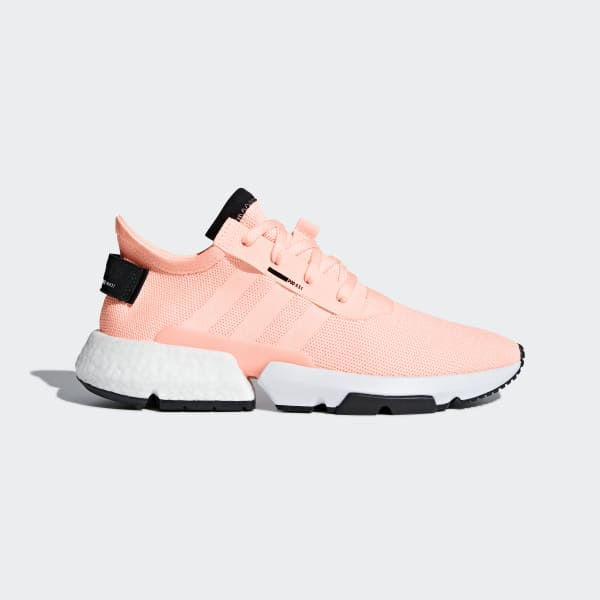

<!--
  Generated template for the CustomerPage page.

  See http://ionicframework.com/docs/components/#navigation for more info on
  Ionic pages and navigation.
-->
<ion-header>

  <ion-navbar color="primary">
    <ion-title color="light">customer</ion-title>
  </ion-navbar>


  <ion-searchbar
  [(ngModel)]="varfilterall.filter"
  [showCancelButton]="shouldShowCancel"
  (ionInput)="filterall()"
  (ionCancel)="onCancel($event)"></ion-searchbar>
  <button ion-button [navPush]="FilterPage"></button>
</ion-header>


<ion-content padding>

  <ion-refresher (ionRefresh)="doRefresh($event)">
    <ion-refresher-content></ion-refresher-content>
  </ion-refresher>


<div class="mycard">

<ion-list>
  <ion-item-sliding #itemsliding *ngFor="let merchandise of filtered; let i = index;">
  <ion-item (click)="ViewDetail('MerchandiseDetailPage',merchandise)">
    <ion-thumbnail item-start>
      
    </ion-thumbnail>
    <h2>{{merchandise.merchandiseName}}</h2>
    <p>{{merchandise.merchandiseId}}</p>
    <p>{{merchandise.merchandiseQTY}}</p>
    <button ion-button clear item-end>View</button>
  </ion-item>
  <ion-item-options side="right">
      <button ion-button (click)="ViewDetail('OrderDetailPage',order);slideclose(itemsliding);"><ion-icon class="icon" name="menu"></ion-icon></button>
    </ion-item-options>
  </ion-item-sliding>
</ion-list>
</div>

</ion-content>
